REVUE MÉTHODE
http://revuemethode.org
Merci pour votre message !
Au titre évocateur, cet ouvrage retrace brièvement l’histoire du train en France puis expose la situation actuelle du réseau ferré, issue des nombreuses suppressions de lignes secondaires au cours des décennies passées, disparitions qui n’apparaissent pas pour autant terminées.
Certes, ne peut-on pas conserver des voies ferrées irriguant chaque agglomération mais la situation qui prévalait au milieu du XXè siècle n’est certes plus la même aujourd’hui à l’ère des AGC (Autorails à Grande Capacité).
Néanmoins, se pose avec acuité la question du développement tous azimuts du transport routier.
En particulier, autocars et autres poids lourds alors que parallèlement chaque jour qui passe montre les effets délétères de la pollution comme des risques inhérents à ce mode de transport. Quant à la voie navigable depuis les années 70 elle reste également le parent très pauvre de la politique générale en la matière.
À une époque où tout doit être vert, renouvelable, éco-responsable comme éco quelque chose… il est pourtant indéniable que le train constitue évidemment une très bonne réponse, y compris en matière de consommation d’énergie, de sécurité et d’indépendance nationale.
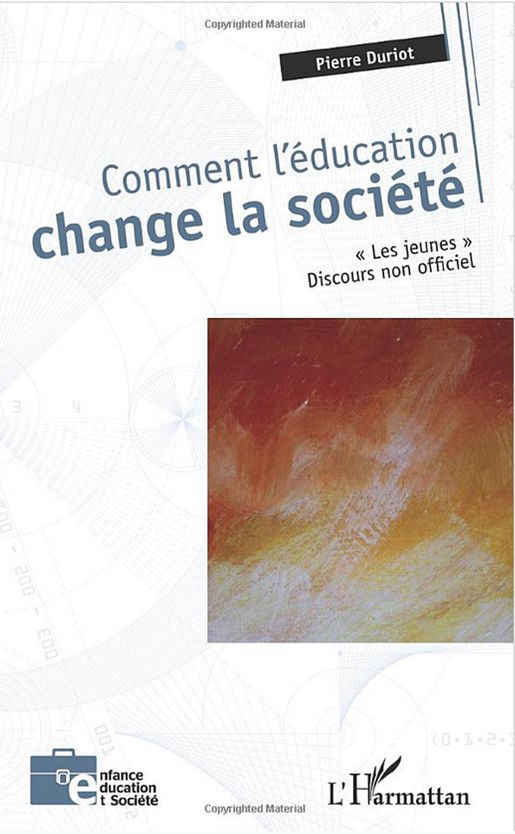
Le comportement des jeunes d'aujourd'hui est souvent sujet d'effarement pour les adultes des générations passées, dans la vie sociale, scolaire ou au travail. En fait le sujet est tabou, il ne faut pas stigmatiser. Les jeunes d'aujourd'hui ne sont plus les mêmes que les jeunes d'antan, tout simplement parce qu'ils n'ont pas été éduqués de la même manière. Issu du terrain, sans concession mais sans procès non plus, cet ouvrage fait l'état des lieux sur ce qui a changé et comment la roue a tourné.
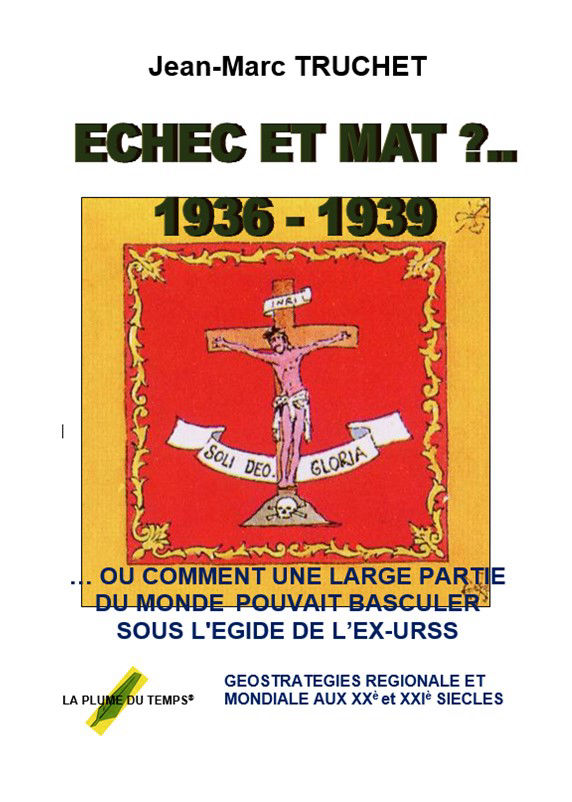
À partir de différentes sources non contestables, ce document reprend, développe et analyse la période située entre 1934 et 1939 aussi bien en France qu’en Espagne puis examine le déroulement de la vie politique et l’évolution de la France depuis ces dates jusqu’à aujourd’hui. L’on constate immédiatement que les bons et les méchants ne sont pas nécessairement ceux que l’on pense et que non seulement ces deux pays passèrent très près d’une mise sous tutelle par Staline mais également toutes leurs colonies. Autrement dit, à travers la guerre civile espagnole mais également le Front Populaire simultanément engagé en France, dans la mesure ou l’Union Soviétique aurait pu établir une domination stable, ce sont les deux tiers du monde qui ainsi étaient conquis. Partant de là, la seconde guerre mondiale n’avait pas lieu car l’Allemagne, cernée sur tous les fronts, n’aurait certainement eu d’autre choix que de s’allier à l’Angleterre et aux USA.
Une étude qui fait froid dans le dos, toujours d’actualité, cependant avec d’autres acteurs sur l’échiquier mondial face auxquels l’Europe actuelle apparaît bien impuissante…
On nous dit : « Soyons modernes, parlons anglais » ou « Le français, c'est dépassé ». On entend aussi, plus rarement, « On n’a jamais autant parlé français dans le monde ». Qui croire ?
Notre langue a triomphé avec Versailles et les Lumières, mais subit rudement le choc de l’Amérique et de la mondialisation. La bataille est-elle perdue ?
Ce livre rappelle une histoire mouvementée, fait le tour du monde des fidélités, des avancées et des reculs et décrit l’action des officiels et des militants.
Deux grands champs de bataille apparaissent :
– les entreprises, bien connues par l’auteur qui en a dirigé aux États-Unis et sur tous les continents ;
– l’Afrique, de l’Algérie, où le français a miraculeusement tenu bon, jusqu’au fond du Congo, car c’est là qu’il y a les gros bataillons… mais aussi les gros problèmes.
Finalement, la mondialisation profite à l’anglais, mais aussi au français. Et d’immenses progrès sont possibles si le travail et le dévouement des étrangers qui défendent mieux que nous notre langue cessent d’être bridés par nos travers étatiques et bureaucratiques. Merci aux Québécois, aux Acadiens, aux Libanais, aux Mauriciens et à tous les Africains !
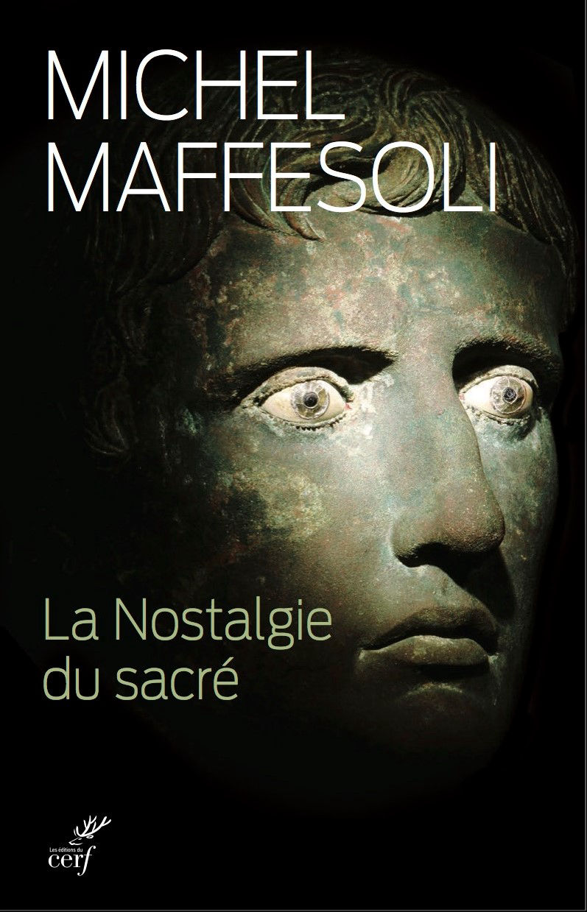
Se penchant sur le retour du religieux, le prophète du Temps des tribus dénonce notre pessimisme : c'est à la fois la totalité de l'individu et du collectif, de l'esprit et de la chair que vise la révolution en cours, celle de la raison intégrale. Une somme.
Après La Parole du silence, qu'il considère comme un traité de théologie pour la postmodernité, Michel Maffesoli s'attache dans son nouvel essai à décrypter ce qu'il nomme la " religiosité postmoderne ". Il étudie ainsi les étapes qui jalonnent ce " retour du sacral " : la réhabilitation des sens et d'une raison sensible, l'importance du partage, du mystère, de l'initiation – mais aussi l'ancrage nécessaire dans la tradition. C'est ainsi que les figures catholiques de la Trinité (l'unicité de Dieu en trois personnes) ou de la communion des saints représentent pour le penseur des " tribus " les métaphores les plus adaptées à l'imaginaire contemporain du sacré.
Un essai profond, qui propose au lecteur non pas un retour au catholicisme comme institution et dogmatisme, mais une véritable résurgence de la catholicité. Ainsi que le retour à une appréhension populaire et émotionnelle de la transcendance.
En notre époque qui marque un carrefour pour la destinée de l’Europe, il ne subsiste que deux voies : soit nous continuons à nous enferrer naïvement et irrémédiablement dans l’aporie du suprémacisme économiste et l’aventurisme post-humain de la modernité tardive néo-libérale, soit nous décidons d’élever nos regards vers certains principes intemporels qui constituèrent en d’autres temps le socle spirituel et politique de notre humanisme originel. Ces principes, cet ouvrage a pour dessein de les faire radicalement sortir et de leur galvaudage et de leur latence afin que notre civilisation européenne puisse s’y abreuver de nouveau et ainsi adopter un nouvel enthousiasme pour l’avenir commun de ses peuples.
Pour ce faire, l’auteur a tâché de redonner à certains mots qui servent à nommer ces principes leur force d’évocation et d’inspiration prescriptive, en leur restituant tout simplement leur sens. En revisitant les notions fondamentales, l’auteur participe d’un travail de fond qui croît de façon occulte au sein même de la dégénérescence postmoderniste.
Le travail publié dans cet ouvrage est en outre une expression de la volonté consistant à vouloir élever notre civilisation européenne au niveau de la nécessité vitale et humaine actuelle d’instaurer un ordre mondial multipolaire. Il est une participation à l’affirmation idéale d’un dépassement des vieilles idéologies qui nous ont menées à l’impasse de l’autodénigrement de nos êtres. Ce livre est donc une lecture indispensable pour tous ceux qui s’intéressent ou qui voudraient participer à l’élaboration d’une Quatrième Théorie Politique pour l’Europe.
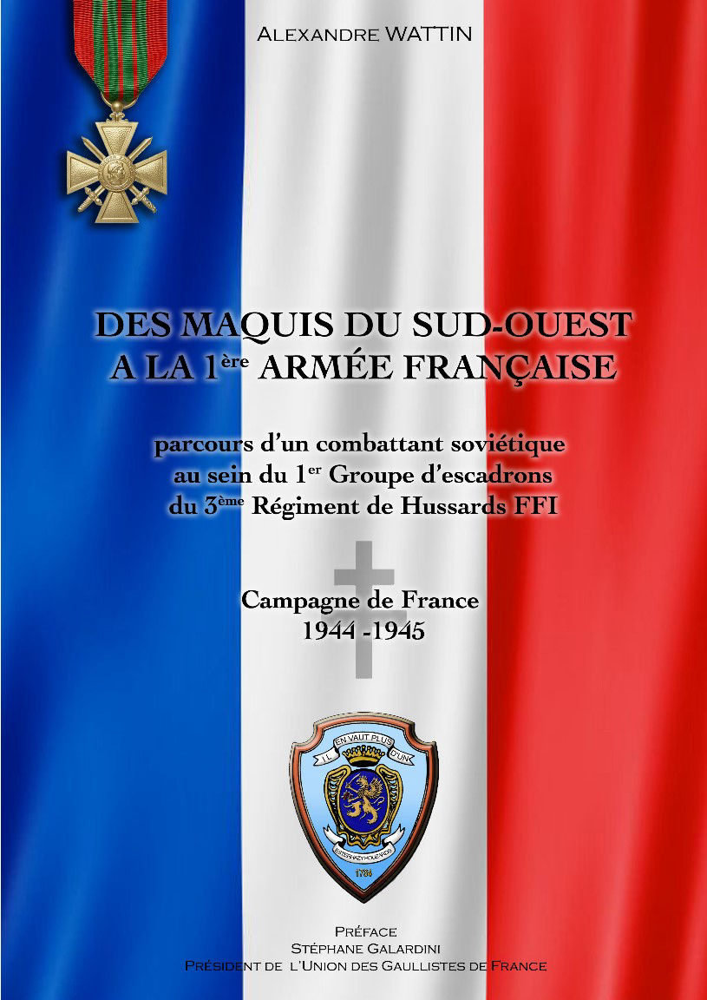
Notre ami Alexandre Wattin, président de l’Observatoire franco-allemand pour la construction européenne (ORFACE) nous avait fait le plaisir d’un article, dans le numéro 19 de la Revue Méthode (avril/mai 2020) intitulé « Des maquis du Sud-Ouest à la 1ère Armée française. Parcours d’un résistant soviétique au service de la France combattante (1944-1945) ». Il a depuis poursuivi ses recherches et très largement complété son étude sur notre héros soviétique Akmed Michel au point d’en faire aujourd’hui un ouvrage, que nous ne pouvons que vous recommander.
Alors que les troupes alliées débarquées en Normandie et en Provence progressent lentement en cet été 1944. Les unités FFI libèrent seules le Sud-Ouest de la France. Avec ses camarades du maquis de Cabertat, un jeune soldat soviétique, d’origine azerbaïdjanaise du nom d’Akmed Michel, se porte volontaire et intègre le 1er Groupe d’escadrons du 3ème régiment de hussards FFI. Il prendra part aux opérations dans le Morvan puis aux durs combats des Vosges et d’Alsace au sein de la mythique 1ère Armée française. Démobilisé en 1945, il sera dans l’obligation de regagner l’URSS. C’est grâce à son engagement et celles de ses camarades FFI que le 3ème régiment de Hussards se verra attribuer la croix de guerre 1939-1945.
Il régnait dans cette demeure une ambiance romanesque d'où émanaient les effluves d'amour courtois et d'esprit chevaleresque. Son harmonie se dégradait, néanmoins, et les efforts de son dernier propriétaire pour maintenir son éclat semblaient vains et toujours insuffisants.
Cédric Verdier en tirait un sentiment de diminution progressive qui l'avait contraint, après de longues batailles perdues, à accepter sa défaite. Le dernier héritier n'était pas capable d'assurer la permanence de son patrimoine, sa survie à travers les âges.
La seule solution était de vendre le château à plus capable que lui, quitte à en flétrir d'indignité.
EAN : 978-2322240685
54 pages
Éditeur : Books on Demand
Sous l'emprise d'une élite politique, médiatique, financière, juridique, n'assistons-nous pas à la mise en place d'un nouveau dispositif de contrôle social et à l'avènement d'une nouvelle dictature, écologiste ?Libérale et judéo-chrétienne à ses origines dans les années 1950, inspirée par les idéaux de liberté, de progrès et de prospérité, « économie sociale de marché » depuis 2004, l'Union européenne a adhéré à l'écologie politique et est devenue « éco-centrique » en 2018 à la suite de la Conférence et de l'accord de Paris sur le climat. Le 4 mars 2020, la Commission européenne a annoncé sa volonté d'inscrire l'objectif de neutralité climatique à l'horizon 2050 dans la législation afin de rendre cet objectif contraignant pour tous. Le GIEC (le Groupe d'experts intergouvernemental sur l'évolution du climat) ayant lui-même admis, dans son troisième rapport d'évaluation, que le climat est « imprédictible », ne faut-il pas voir dans le pacte vert pour l'Europe de la Commission européenne, une utopie, et dans son projet de le rendre contraignant, un coup d'État ?Comment en sommes-nous arrivés là ?
Broché : 140 pages
ISBN-13 : 978-2931095003
(10,55 € en version papier et 7,5 € au format Kindle sur Amazon), www.palingenesie.com.
Positionner les interfaces comme objets de la géographie est une démarche particulière aux marges des pratiques courantes de la géographie. La conceptualisation du lien indissociable au support terrestre renforce l'originalité de l'entreprise. Les interfaces dans leur diversité sont abordées par la reconnaissance de l'influence de Camille Vallaux et de l'humanisme géographique. La géographicité, la trame de construction, la matérialité et la conscientisation contribuent à la présentation d'interfaces d'ensauvagement, mémorielles ou environnementales. Cette pluralité donne accès à des enseignements propices à des mises en œuvre des interfaces efficientes au cœur de la géographie.
Date de publication : 3 novembre 2020
Broché - format : 13,5 x 21,5 cm
190 pages
ISBN : 978-2-343-21638-6
EAN13 : 9782343216386
EAN PDF : 9782140162602
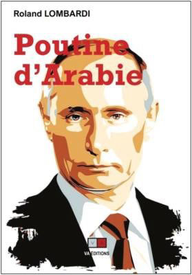
Dès les débuts des printemps arabes et suite à l’intervention occidentale en Libye pour renverser Kadhafi en 2011, le Kremlin se lança alors dans une politique pro-active. En effet, échaudés par l’affaire libyenne, où les Russes se sont sentis floués, ils vont d’abord en Syrie, soutenir diplomatiquement Assad aux prises avec un soulèvement populaire qui dégénérera très vite en guerre civile. Puis, le 30 septembre 2015, les forces militaires russes interviendront directement dans le conflit syrien. Alors que plusieurs observateurs prédisaient un nouvel Afghanistan pour Moscou et son inévitable échec dans sa politique moyen-orientale, force est de constater qu’il n’en fut rien.
Aujourd’hui, que cela nous plaise ou non, et par suite de ses succès militaires et diplomatiques en Syrie, la Russie est devenue incontournable. Elle reste le maître du jeu et est même le nouveau « juge de paix » de la région vers qui tous les grands acteurs, Israéliens, Égyptiens, Saoudiens, Iraniens, Turcs et autres, se tournent à présent. Dans Poutine d’Arabie, Roland Lombardi nous explique comment et pourquoi nous en sommes arrivés là…
VA Editions juillet 2020
198 pages
ASIN : B087JY8CYW
La crise de la Covid-19 n’est pas sanitaire, mais politique, et aucune des mesures liberticides n’est fondée scientifiquement ; par contre, la Covid-19 rend évidente la corruption complète du corps politique et de ses appendices médiatiques et scientifiques. Cette corruption reflète la crise du capitalisme financier, et la volonté des oligarques de détruire la démocratie représentative. Le système politique qui se met en place est bien totalitaire, c’est-à-dire que toutes les facettes de la vie des citoyens seront pilotées par une structure idéologique mortifère ne différenciant plus les sphères privées et publiques. Ce totalitarisme sera fasciste, sanitaire et numérique.
Covid-19(84) ou La vérité (politique) du mensonge sanitaire : le fascisme numérique, Louvain-la-Neuve, Éditions Chromatika, 2020. 978-2-930517-68-1, pdf 978-2-930517-69-8, 226 pp., 20 €
Michel Weber est professeur adjoint de philosophie à l’Université du Saskatchewan (Canada). Il a publié plus de cinquante ouvrages scientifiques, dont une quinzaine de monographies. Il pratique également la thérapie psychocorporelle ayurvédique (Cabinet Metabyanga) et le coaching existentiel (Centre Tonaki).
Une autoédition de langue française, voire anglaise dont le fond documentaire provient en large partie des ouvrages écrits par Mr. Jean-Marc TRUCHET.
Toutefois, certains sont réalisés en coopération avec d’autres autres auteurs, soit François GARIJO (France) et le Dr. George v. RAUCH (USA).
Désormais uniquement sous forme numérique, cette solution permet aujourd’hui de proposer des ouvrages à prix avantageux.
Ainsi, cette collection s’ouvre beaucoup plus largement au monde, proposant des ouvrages originaux et de qualité.
Tous les textes sont proposés en format PDF et largement illustrés, y compris en couleur.
Ils peuvent être lus sur écran d’ordinateur (MAC ou PC) comme sur liseuse ou tablette.
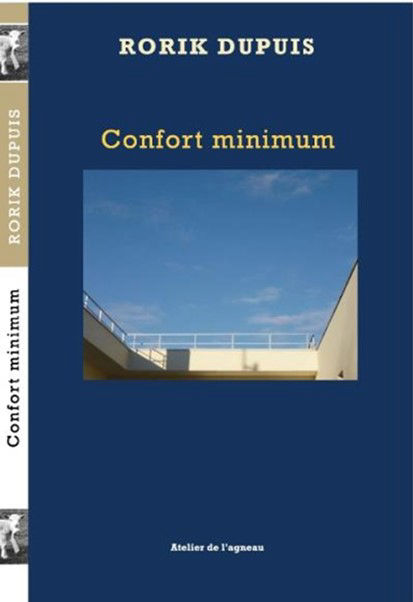
Dans ce deuxième livre de Rorik Dupuis, on lira la suite des errances poétiques de l'auteur entamées dans son premier recueil « Le dessin d'une oreille ».
« Confort minimum » en reprend le mode « balbutiant » et la syntaxe télégraphique pour évoluer, par tentatives, par humeurs, vers un style plus romancé, plus linéaire, particulièrement dans la seconde partie, où l'auteur se concentre précisément sur des situations, des scènes données.
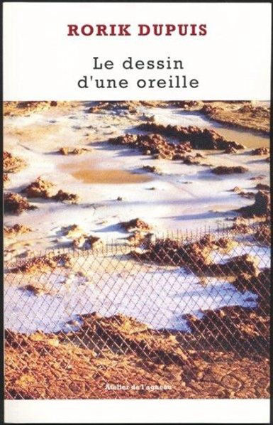
Ces textes constituent une sorte de roman désarticulé. Souvenirs, rêves, réflexions, se constituent en fragments de vie. Le style très abouti donne à l'ensemble une étonnante cohérence. La suite est déjà écrite et va paraître dans quelques mois.
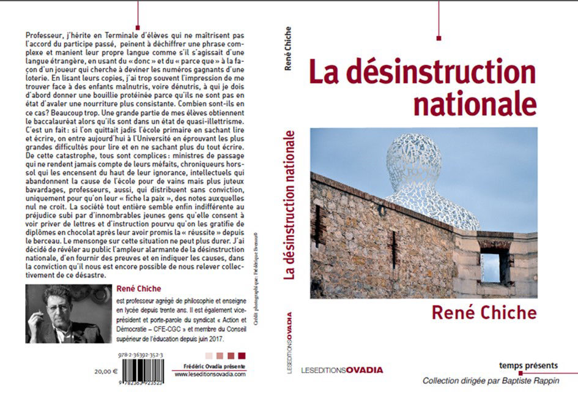
Nul n’ignore que les plus graves dysfonctionnements affectent l’éducation nationale. Les enfants que les Français confient à l’école n’en sortent pas avec l’instruction qui leur est due. Les employeurs constatent les multiples carences de jeunes gens qu’on a leurrés sur leur niveau réel en leur distribuant avec «bienveillance » des diplômes qui ne valent plus rien.
Cet ouvrage évoque la première trentaine (1947 ' 1977) de l'histoire du journal minoritaire La Pensée Russe, le plus connu et le plus diffusé dans la communauté russophone en France. L'auteur aborde le problème d'émigration des Slaves vers les pays d'Europe de l'Ouest, en particulier, vers la France, et le phénomène de la presse écrite russophone à l'Hexagone. Son objectif est de découvrir, à partir de cette presse, l'apport des médias minoritaires dans la naissance d'une communauté diasporique et le rôle du journal La Pensée Russe dans la vie de la communauté slave. La rédaction de ce périodique réunit les esprits éminents de l'émigration slave tels que Nina Berberova, Georges Adamovitch, Piotr Kovalevski, Boris Zaitsev.
L'oeuvre d'Ernst Jünger ne se réduit pas à ses récits et journaux de guerre. C'est une méditation originale sur le Temps, les dieux, les songes et symboles. Elle mène de l'art de l'interprétation au rapport des hommes au végétal et à la pierre, elle est aussi une rébellion contre l'uniformisation, incarnée dans la liberté supérieure de l'Anarque envers tous les totalitarismes. Cet ouvrage qui met en regard la pensée de Jünger et celles de ses maîtres, de Novalis à Heidegger, entend rendre compte de son dessein poétique et gnostique. Il donne à voir le monde visible comme l'empreinte d'un sceau invisible.
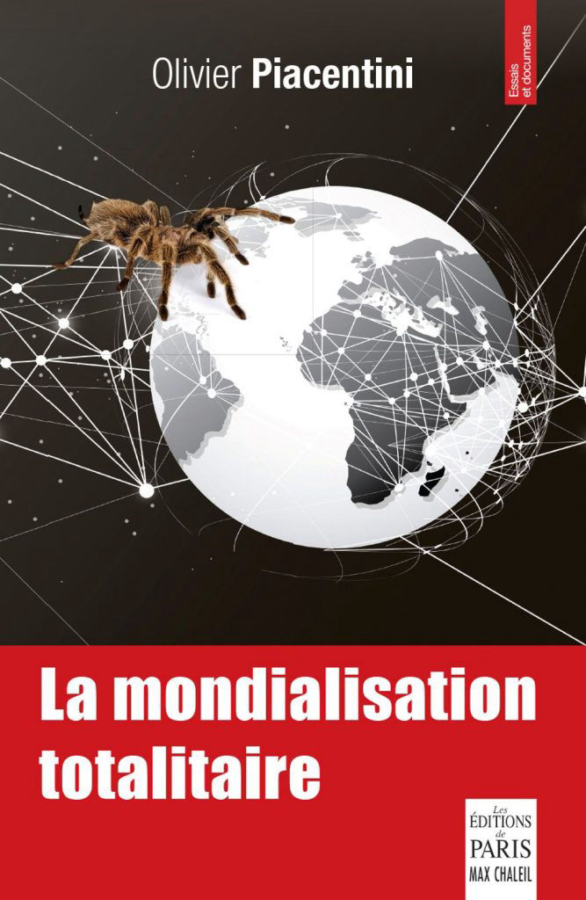
Mondialisation et totalitarisme : les deux termes semblent antinomiques, la mondialisation étant présentée comme une libération aux antipodes du totalitarisme, hypertrophie du nationalisme. Or, nous n'avons jamais autant subi un tel conditionnement, un tel rejet de tout ce qui n'entre pas dans les vues du politiquement correct comme du réalisme économique.
Sous nos yeux se met en place un système insidieux, souriant, en réalité phagocytaire. Délocalisations, concentration des entreprises, destruction des emplois, concurrence déloyale, laxisme en matière d'immigration, complaisance avec le communautarisme, le but est clair : asservir Nations et Etats, araser les particularismes, saper la démocratie, abaisser le niveau culturel, uniformiser les modes et les goûts pour parvenir à une gouvernance mondiale sans précédent. Parallèlement à la transformation des peuples occidentaux en consommateurs passifs et assistés, gavés de fêtes et de jeux, se développe une exploitation forcenée du tiers-monde, de ses richesses et de ses travailleurs, ressort de l'enrichissement accru des puissants privant les pauvres du nécessaire pour accroître leur abondance.
Depuis des décennies, un totalitarisme d'un nouveau genre tisse sa toile, substituant à la violence d'Etat le conditionnement par le marketing et les nouvelles technologies.
Dans cet essai, Olivier Piacentini décortique l'avènement des nouvelles oligarchies financières qui, ayant supplanté le pouvoir des Etats, déroulent un programme de domination planétaire visant à changer le cours de la vie humaine, voire transformer l'humain. Une perspective glaçante que voilà cinquante ans avaient pressentie Aldous Huxley et Georges Orwell.
Dans ce voyage en géographie, une pérégrination de nature humaniste est entreprise, afin que chacun perçoive les interdépendances entre le support terrestre, le vivant, l'Humanité et les dynamiques qui animent l'ensemble. Quelques influences humanistes préparent à la conceptualisation de ce voyage. L'empreinte anthropique, les pratiques contemporaines et l'enseignement d'une géographie humaniste annoncent des enseignements quant aux perspectives d'une pratique humaniste, pour laquelle il reste énormément à entreprendre.
Dictature des minorités, justice partiale, médias militants, indignation à géométrie variable, immigration et islamisation galopantes...La France subit des changements radicaux dans un contexte d'interdiction moralisatrice de les critiquer.L'auteur franchit cet interdit qu'il dénonce avec originalité. Dans ce recueil de réflexions brèves et d'aphorismes, il avance sans tergiverser que les dérives du progressisme accélèrent le risque d'effondrement de notre civilisation. Cette politique libertaire promeut un impossible «vivre-ensemble» alors que les méfaits du communautarisme, l'immigration africaine submersive, devenue inassimilable, et l'islamisation diffuse ont déjà dépassé leur point de non-retour.Face à ce péril civilisationnel, le « Grand Rapatriement » de cette immigration subie est la seule politique efficace à mettre en œuvre pour se libérer du « Grand Remplacement ».
L'année 2019 pourrait rester comme celle de l'hystérie climatique avec des excès inconsidérés d'annonces catastrophiques et d'espoirs lointains. Mais en fait, c'est une année normale sur le front de l'énergie et de la géopolitique de l'énergie. Depuis qu'en 2014 la spéculation sur le prix de l'énergie à fait long feu, le marché est redevenu raisonnable. L'année 2019 a vu consolider la primauté des énergies fossiles, un certain renouveau de l'énergie nucléaire et une stagnation des énergies renouvelables. Ce livre reprend 28 articles que l'auteur a publié au cours de 2019 en étant chaque fois dans l'actualité du moment. Cette anthologie de l'année énergétique 2019 montre que le monde de l'énergie évolue, mais pas dans la direction de celle annoncée par les médias et les politiciens.
Face au resurgissement du besoin d’affirmation des différences, des spécificités langagières et idéologiques, des rassemblements autour d’une commune origine, réelle ou mythifiée, quelle attitude adopter ? Qu’elles soient musicales, religieuses, sportives, sexuelles ou culturelles, ces « tribus » postmodernes occupent le nouvel espace public. À l’harmonie abstraite d’un unanimisme de façade est ainsi en train de succéder une harmonie conflictuelle. Ne faudrait-il pas mieux accompagner cet idéal communautaire, plutôt que le dénier ?
Professeur émérite à la Sorbonne et membre de l’Institut universitaire de France, Michel Maffesoli est l’auteur de nombreux ouvrages, notamment Le Temps des tribus, Du nomadisme, La Parole du silence et Écosophie.
Hélène Strohl, inspectrice générale des affaires sociales honoraire, est l’auteur de L’État social ne fonctionne plus.
« J’ai été l’un des plus hauts responsables de la gendarmerie française. À la demande des élus de la République, j’ai expliqué les carences et les défis auxquels nous devions faire face. Cette vérité, détaillée dans un livre, m’a coûté cher : Tout ce qu’il ne faut pas dire a provoqué mon exclusion de cette institution qui était ma vie. Désormais libre de parole et loin de la “Grande Muette”, je ne veux plus rien cacher.
“La France va dans le mur”, “On ne peut plus continuer comme ça” : tous les citoyens font ce constat d’échec, quand les politiques, eux, s’obstinent à rester aveugles, à diviser au lieu de rassembler. Qu’il s’agisse de la justice ou du maintien de la tranquillité publique, il est grand temps d’apporter les remèdes pour guérir un système malade.
De mon poste, j’ai vu ce que la société française comportait d’espoir, de besoin de changement et d’institutions fortes. J’ai vu, aussi, ses zones de non-droit et ses exclusions. Il faut s’indigner, lutter, rétablir une autorité bienveillante.
Pour la France, je continue à dire ma vérité haut et fort. »
B. S.
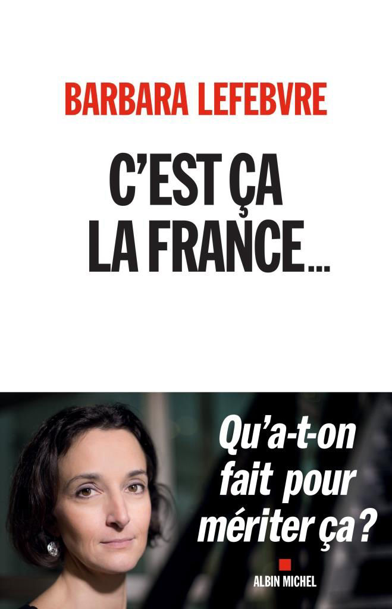
Nous assistons à un virage de notre histoire. Nos territoires s’opposent. France des métropoles et France périphérique s’affrontent. La colère populaire face aux élites. Quand les communautés se dressent les unes contre les autres, que nos symboles et nos valeurs sont rejetés, torpillés, brûlés, seule la honte gouverne. Une honte qui domine tout. C’est ça la France ? Une nation prise en tenaille entre son idéal égalitaire et des revendications identitaires ? Il est temps d’en finir et de retrouver l’esprit patriotique. Après Génération “j’ai le droit”, Une France soumise et Les territoires perdus de la République, Barbara Lefebvre analyse les origines et les enjeux des hontes françaises et nous explique comment les conjurer.
Gérard Bardy est journalite et écrivain, auteur de plusieurs livres sur le général de Gaulle. Nous vous encourageons vivement à découvrir ses oeuvres et à vous procurer son ouvrage « Dernières heures à Colombey ».
Toute sa vie, on redécouvre de Gaulle. Je l’ai redécouvert à Jaén, dans le parador sublime où il écrivit quelques pages de ses prestigieuses mémoires. L’édifice en retentit encore, le personnel en parle. Je l’ai redécouvert par hasard sur le web, sur un des sites qui le citent encore. Je l’ai redécouvert un soir à Paris en croisant son fils avec mon propre père ; nous avons discuté quelques instants, et c’était céleste. Le coucher de soleil, le Ranelagh, les jardins, le fils qui se rappelait et qui comme son père habite dans une autre dimension. Je me sentais tout près de Jean Parvulesco qui a sublimement évoqué le Général et sa brigade qui n’est pas de ce monde. Lorsqu’effaré par la tournure que prend notre hostilité commanditée envers la Russie, j’ai écrit pour Sputnik j’ai retrouvé, toujours par hasard, ses pages extatiques sur la Russie, celles de la Guerre et celle du discours de son voyage à Moscou. Elles étaient sublimes, et en quelques heures j’avais des dizaines de milliers de lecteurs ; car les Français attendent un réveil – au moins ceux qui veillent. Puisse ce livre divisé en deux parties (et non deux partis…) y contribuer. La première évoque le général et ses formidables incartades contre le machin européen et la domination anglo-saxonne ; la deuxième reprend mes chroniques de Dedefensa.org et de reseautinternational.net, prises et reprises sur des dizaines d’autres sites de la résistance locale et globale... Les gens dorment, et quand ils meurent, ils réveillent, aurait dit le prophète.
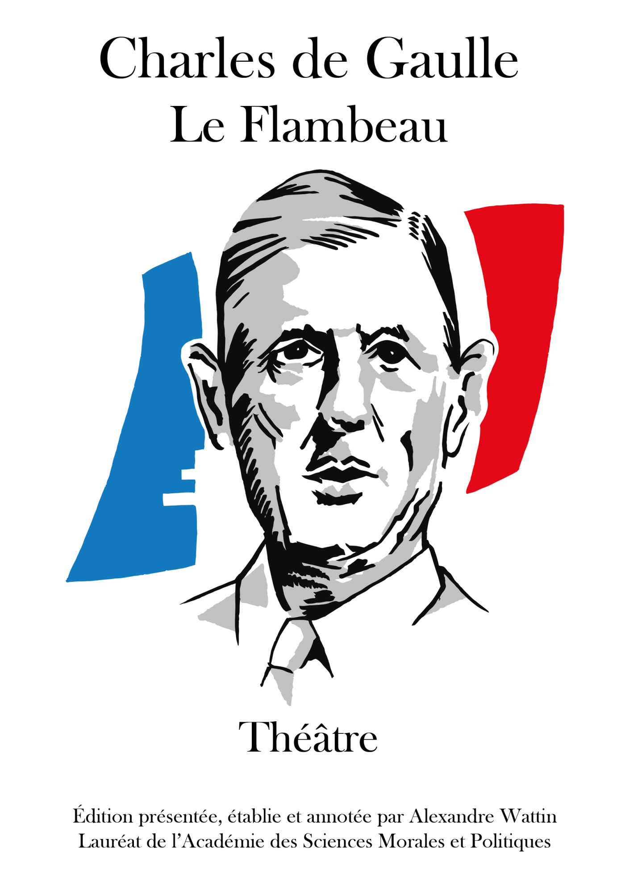
A l'autonne 2000, l'auteur découvre une petite pépite littéraire enregistré jusque-là parmi les articles d’érudition militaire alors qu'il s'agissait d’une admirable pièce de théâtre écrite par le capitaine de Gaulle en 1927.
Il y a 20 ans, grâce à l’accord de l’Amiral Philippe de Gaulle, il a pu sortir de l'oubli « le Flambeau » dans une première édition ; puis dans une édition bilingue à l’occasion du 40ème anniversaire du traité de l’Élysée.
Aussi, afin d’honorer la mémoire du Général de Gaulle, en cette année du 130ème anniversaire de sa naissance et du 50ème anniversaire de sa mort, il a été décidé de republier « le Flambeau » dans une version annotée par Monsieur Alexandre WATTIN.
« Le Jeu Russe sur l’échiquier global » est un livre de géopolitique écrit par un journaliste et Sénateur russe. Il couvre la période de 1985 à 2019 qui a vu la disparition de l’URSS, une période de chaos économique, politique et financier de 1991 à 1999, puis un retour de la Fédération de Russie sur la scène politique mondiale.
L’auteur sait de quoi il parle, il a commencé sa carrière comme haut fonctionnaire à l’époque de Mikhaïl Gorbatchev. Il déroule les relations de la nouvelle Russie avec l’Occident du point de vue russe, une présentation qui a l’intérêt de nous aider à regarder l’histoire contemporaine d’un œil nouveau. Dans la préface qu’il a écrite pour ce livre, Jean-Pierre Chevènement parle d’ « une fresque passionnante de l’histoire contemporaine de la Russie et de ses relations internationales depuis la fin de l’ère Gorbatchev, la présidence de Boris Eltsine et l’avènement au pouvoir à Moscou, en 2000, de Vladimir Poutine. Rien de plus instructif pour le lecteur européen que d’entrer dans cette tranche d’Histoire avec une grille de lecture non occidentale, quitte à faire l’effort de se mettre à la place des responsables russes. On peut changer de regard sans renoncer à être soi : simplement pour comprendre ».
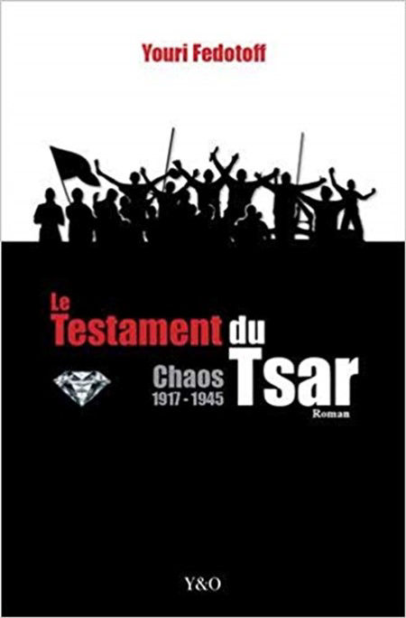
En 1917, à la veille de son abdication, le Tsar confie secrètement à son filleul Michel Trepchine la régence et une fortune en diamants d'une valeur inestimable. Le jeune héritier va s'employer à reconquérir la Russie tombée aux mains des bolchéviques. Dans une Europe déchirée par l'iniquité des traités de paix qui ont mis fin à la Première Guerre mondiale et précipitent le monde dans la suivante, les bolcheviques vont poursuivre l'élimination de leurs opposants et tenter de récupérer le précieux héritage. S'engage alors, une redoutable partie d'échecs où se croisent de nombreuses figures historiques. Aucun obstacle, aucun revers ne peut abattre la loyauté inflexible de Trepchine.
Cette volonté farouche va mettre à l'épreuve l'amitié fraternelle qui le lie à Sacha Boulganov compagnon de route de Trotski. Et si cette histoire était vraie... L'existence du testament secret a été livrée à l'auteur par son père au soir de sa vie à Lima au Pérou, près d'un siècle après la révolution russe. Son fils, Youri Fedotoff, descendant d'un général de l'armée blanche a fait de ce témoignage un roman qui tient tout à la fois de l'aventure épique, de la saga romantique et de la tragédie historique.
Descendant d'un russe blanc et d'une comtesse hongroise, Youri FEDOTOFF est né à Paris en 1959. D'un éclectisme gourmand, il sera tour à tour charpentier, urbaniste, avocat et enseignant en droit public. Auteur d'articles, notamment sur Cicéron, Bergson ou encore Nicolas Bouvier, il signe ici un roman immodérément russe !
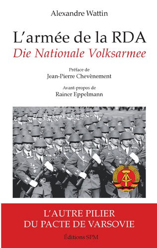
À l'issue de la Seconde Guerre mondiale et du partage de l'Allemagne, deux armées ont vu le jour : la nouvelle armée allemande à l'Ouest et son intégration dans l'OTAN en 1955 et la Nationale Volksarmee en 1956, intégrée au « Pacte de Varsovie ». Durant 40 ans, la NVA constituera une armée redoutable et sera considérée comme l'une des premières armées au monde et l'allié le plus fiable de l'URSS. Mais après la chute du Mur de Berlin, il a fallu dissoudre et unifier cette armée. Essentiellement basé sur des documents et archives allemandes, cet ouvrage explique la façon remarquable dont les autorités politiques mais surtout militaires de l'Allemagne de l'Ouest et de l'Est ont pu en l'espace de quatre années désagréger et effacer un extraordinaire outil militaire.
Alexandre WATTIN, historien militaire, a servi au sein des forces françaises en Allemagne de 1980 à 1984 et de 1990 à 1995. Binational, il est commandant de réserve dans la Bundeswehr et le premier militaire français à avoir servi comme officier de réserve simultanément dans les deux armées. Il est auteur d'ouvrages et d'articles traitant des relations franco-allemandes. Président de l'Observatoire des Relations franco-allemandes pour la Construction européenne, il est également directeur du Centre des Hautes Études franco-allemandes pour l'Europe.
Bien que de nature radicale, les évolutions politiques, géopolitiques, institutionnelles, économiques et juridiques actuelles, passent souvent sous le radar des analystes, qui ne voient que l’écume des transformations. Les français, qui perçoivent de façon diffuse la gravité des évènements en cours, sont limités par leur perception et ne comprennent, trop souvent, pas la cohérence de long terme des évènements. Car, sur le modèle de la tectonique des plaques, les modifications auxquelles nous assistons, préparées de longue date et longtemps restées invisibles, deviennent brutalement apparentes aux yeux de tous. Privés d’analyses cohérentes sur la durée, les français ne disposent pas de réelles armes pour défendre le modèle de société qu’ils avaient accepté et qui leur est retiré, de façon aussi sournoise qu’autoritaire.
Face à l’apparente inéluctabilité des phénomènes auxquels nous assistons, une réaction par le rejet est aujourd’hui la seule alternative politique disponible. A l’heure des bilans, cette synthèse apporte des clefs de compréhension systémique que le lecteur curieux pourra utilement compléter par la lecture du livre Les raisons cachées du désordre mondial qui énumère les conditions du renouveau civilisationnel. Demain dès l’aube...
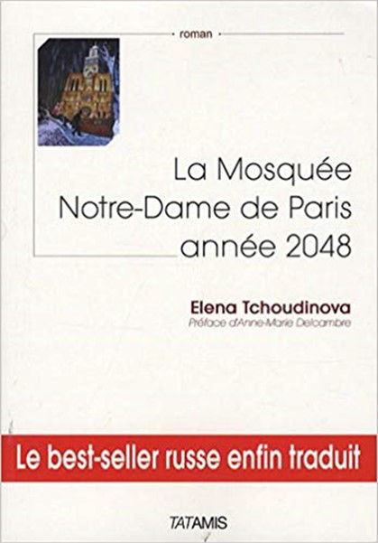
La rédaction de Méthode recommande l’ouvrage d’Elena Chudinova (rebaptisée par la maison d’édition Tchoudinova…)
Parue en 2005 à Moscou et traduite en français en 2009, cette dystopie a connu un grand succès auprès du public. Traduite en sept langues, ce livre a été le premier à prévenir du danger de l'expansion de l'islam radical. Pourtant « La Mosquée Notre-Dame de Paris : année 2048 » ne se limite pas à faire peur, mais apporte aussi une réponse à la question : Qu'est-ce que les Européens doivent-ils faire pour prévenir cet avenir effroyable ? « La Mosquée Notre-Dame de Paris » est avant tout l'œuvre de la pensée chrétienne. Les événements tragiques de cet automne rendent ce livre plus actuel que jamais. Les dix ans écoulés depuis sa première publication, ont donné raison à son auteur.
ISBN-13 : 978-2917617021 - 491 p.
Il y a cinquante ans, le 28 avril 1969, le général de Gaulle choisissait de quitter le pouvoir après avoir affronté les événements de mai 1968.
Aujourd’hui, la France entière, son président, son gouvernement, ses élites sont confrontées à une crise du dialogue sans précédent.
Écoutons les mots que de Gaulle, visionnaire attentif et exigeant, consacrait déjà aux enjeux et questions qui animent notre « grand débat national ».
Il s’adresse aux Gilets jaunes, au président Macron et à chaque citoyen concerné.
L’auteur
Journaliste et écrivain, Gérard Bardy a été rédacteur en chef adjoint à l’AFP puis directeur de Pèlerin Magazine.
Il a aussi longtemps collaboré au Monde et à Valeurs Actuelles.
Il est secrétaire général de l’Union de la Presse Francophone (UPF), section France. Il a publié sept essais, dont Charles le Catholique – de Gaulle et l’église et Les moines-soldats du Général chez Plon.
Il est membre de la Convention de la Fondation Charles de Gaulle.
La France d’en bas est en colère ! Elle le fait savoir. Mais pourquoi toute cette colère sous la présidence Macron ? L’auteur répond à la question de manière magistrale dans une mise en relief des faits et des réalités et identifie les déterminants de cette colère en toute liberté de langage, dans la simplicité et la clarté. Du Louvre aux ronds-points, donc des élections de 2017 au mouvement des gilets jaunes, les chapitres se suivent dans un rythme soutenu et expliquent pourquoi la France d’en bas et au-delà se sent humiliée, méprisée et maltraitée. Alors les raisons de la colère éclatent au grand jour, ainsi l’élection d’Emmanuel Macron grâce à un marketing surpuissant et qui laisse la France d’en bas dans une sorte de hors-jeu, sa doctrine, sa pratique verticale du pouvoir, ses petites phrases, sa politique en faveur des riches, les grands problèmes de manque d’exemplarité, de représentativité, de pouvoir d’achat, de ras le bol fiscal et d’injustices sociales, le racket des automobilistes, l’immigration incontrôlée ou encore l’abandon des territoires ruraux et bien d’autres. Puis vient le mouvement des gilets jaunes avec un menu absolument original et inédit où se succèdent le concept des rancœurs accumulées, le coup marketing inconscient, l’implication des médias et les élans d’une nouvelle fraternité. Et du Louvre aux ronds-points, c’est un peu de l’histoire de France qui vient de s’écrire.
L’auteur : François MIDON est un citoyen français, né dans un petit village de Lorraine, fils d’agriculteur, et résidant en Bourgogne. Il connaît bien la France périphérique, la France des provinces, la France rurale. De formation supérieure, il a été directeur du marketing de la filiale France d’une grande compagnie américaine, constructeur d’agroéquipements et de matériels TP, puis il a créé son propre cabinet de consultant auprès des chefs d’entreprises et des élus. Il a ainsi déroulé toute sa carrière dans le monde de l’entreprise et des collectivités locales, au milieu de tous les collaborateurs qu’il a côtoyé quotidiennement dans ses missions et lors des très nombreuses conférences et sessions de formation qu’il a animées. Il a aussi une famille, des enfants et des petits enfants. Il sait de quoi il parle.
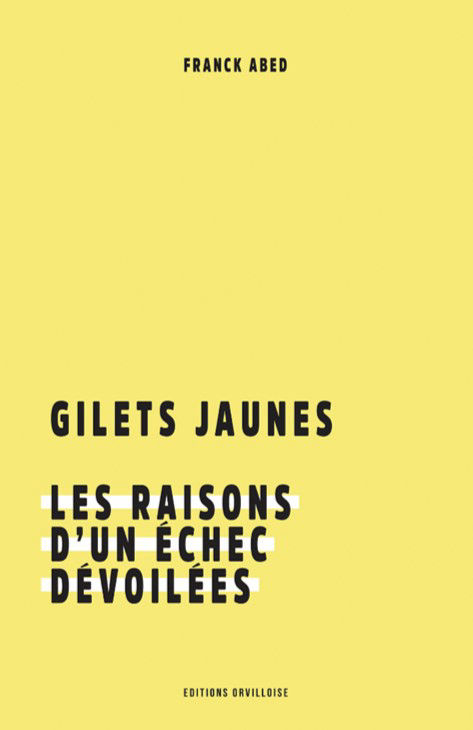
Franck Abed, historien et théoricien politique, rédacteur de la revue « Méthode », a suivi de près les Gilets Jaunes, mouvement de protestation apparu en France en octobre 2018.
Au fil des semaines, il a rédigé des articles d’analyse sur ce phénomène social, politique et culturel, en rappelant qu’un combat mené sur de mauvaises bases ne pouvait déboucher sur un « Grand Soir » tant espéré par les protestataires. Effectivement, les différentes manifestations organisées par les Gilets Jaunes, loin de montrer la force de la France des sans grade, ont rappelé que, sans doctrine sûre et sans une organisation digne de ce nom, il était extrêmement difficile de faire vaciller la République.
Pour espérer de meilleurs lendemains, il demeure essentiel de comprendre les raisons de cet échec tout en revenant aux fondamentaux qui ont consacré la France comme l’un des plus grands pays du monde.
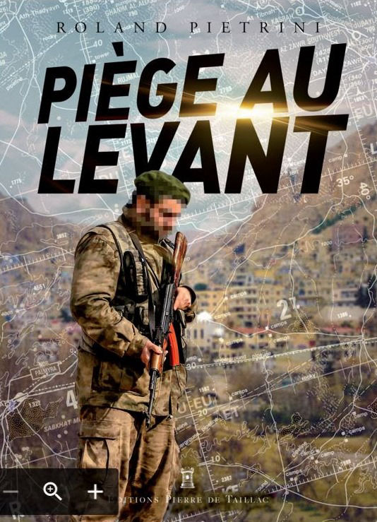
SHAMS, tel est le nom de code de l’opération périlleuse que doit lancer la DGSE à la frontière syro-libanaise. Des renseignements concordants font état d’une menace bactériologique contre la France et l’agence n’a d’autre choix que d’envoyer l’un de ses meilleurs opérateurs à la source…
L’objectif de « Charles » : infiltrer l’organisation et retrouver l’un des terroristes. Un face-à-face haletant, dangereux, pervers commence alors et rien ne va se passer comme prévu. Qui sortira vainqueur de ce duel ? Charles reviendra-t-il vivant de cette descente aux enfers ?
Ancien officier de renseignement, Roland Pietrini est consultant opérationnel, et participe à des études de prospectives et d’expérimentations au profit des Armées. Sa carrière militaire est fortement marquée par la guerre froide. Observateur au sein de la Mission militaire française de liaison près du haut commandement soviétique en Allemagne de l’Est, attaché d’ambassade près de l’Ambassade de France à Varsovie, il a passé plus d’une quinzaine d’années dans les milieux opérationnels du renseignement militaire.
Comment l’idée de démocratie a-t-elle cédé le pas au chaos universel, fait de guerres économiques, de terrorisme, d’interventions militaires « préventives », de « révolutions colorées » etc. ? Derrière les apparences, qui sont les réels protagonistes de la géopolitique mondiale ? Les Gilets jaunes sont-ils une résurgence du rêve démocratique né en Occident ?
L’analyse juridique, institutionnelle, économique et monétaire faite dans le présent ouvrage, qui considère les évolutions historiques nationales et internationales, permet de saisir la réalité cachée du pouvoir actuel. Derrière le pouvoir politique apparent se profile, dans un jeu d’ombres et de lumières, le véritable pouvoir mondial. Les États sont majoritairement devenus des coquilles vides, dénués de toute légitimité politique, d’autonomie et de souveraineté.
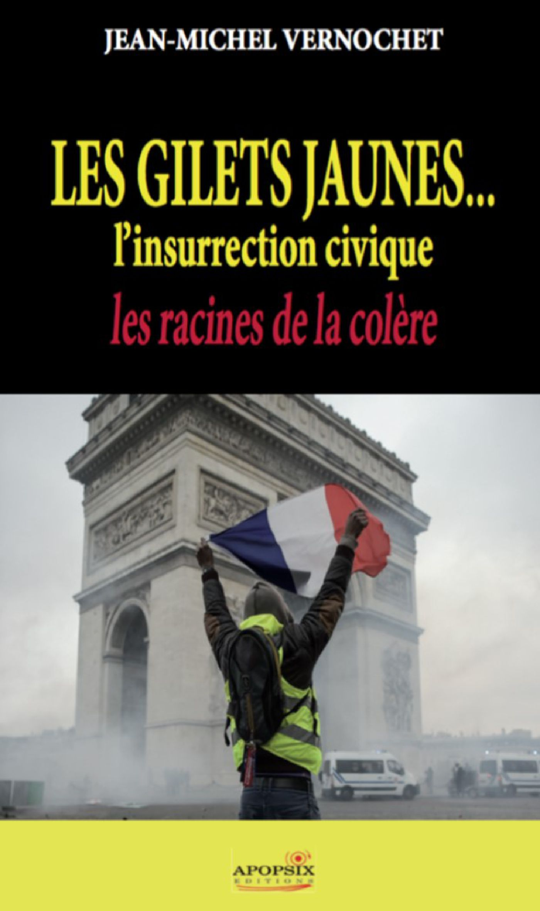
La France profonde souffre d’un État jacobin délocalisé à Bruxelles, ses forces vives sont entravées par une bureaucratie tatillonne qui impose des règles et des mises aux normes sans fin.
Cette démocratie-là est aujourd’hui remise en cause par une large partie du peuple : les Gilets Jaunes.
Malgré les injonctions du Gouvernement et ses fallacieuses promesses, le fleuve de la colère populaire ne semble pas vouloir regagner son lit.
Vous avez eu ce que vous demandiez : smic augmenté de cent euro, gel des hausses de carburants et puis l’on vous octroie un grand débat national… Un débat oui, mais encadré. Bien sûr sont interdites les questions qui fâchent. Pourtant ces questions sont le non-dit qui sous-tend la révolte de la France périphérique.
« Ce pays de Gaulois réfractaires au changement » que l’on croyait condamné à se taire et à payer toujours plus, s’est réveillé dans son instinct de survie.
Alors que le vaste mouvement actuel de prétendue « modernisation du droit » ne cesse de rabaisser l’État pour le voir disparaître, la modernisation que nous proposons ici a pour objet de remettre l’État à sa véritable place, celle d’un garant du bien commun, d’un régulateur des appétits individuels et catégoriels. Il s’agit, tout simplement, d’appliquer à l’entreprise les préceptes de séparation des pouvoirs — que les Américains appellent Checks and Balances — que Montesquieu a, à tort et délibérément, consacrés à l’organisation politique des États. Si l’État et le pouvoir politique qui le sous-tend ne doivent pas être dilués, sous peine de perdre leur raison d’être, le pouvoir économique qui se cache derrière les multinationales a, tout au contraire, grand besoin de faire l’objet d’une limitation. À cet effet, il importe d’opérer une distinction juridique entre les différents participants de l’entreprise et de rééquilibrer les forces en présence afin, dans un second temps, d’établir clairement les responsabilités de chacun de ces participants.
La théorie juridique unitaire de l’entreprise présentée dans ce livre, sans nuire aux petites et moyennes entreprises (PME), est de nature à faire disparaître la puissance politique cachée derrière les « galaxies opaques » que sont les « groupes économiques ». « L’entreprise nouvelle norme » rendra au « fait politique » la place qui est, de droit, la sienne et qu’il a malencontreusement, et depuis trop longtemps, abandonnée au profit du « fait économique » anonyme.
Ce renouveau juridique de l’entreprise actera un retour de « l’ordre naturel », c’est-à-dire d’une organisation politique et sociale viable, compatible avec le concept de civilisation. Ce nouvel ordre politique rendra, à son tour, possible un renouveau géopolitique.
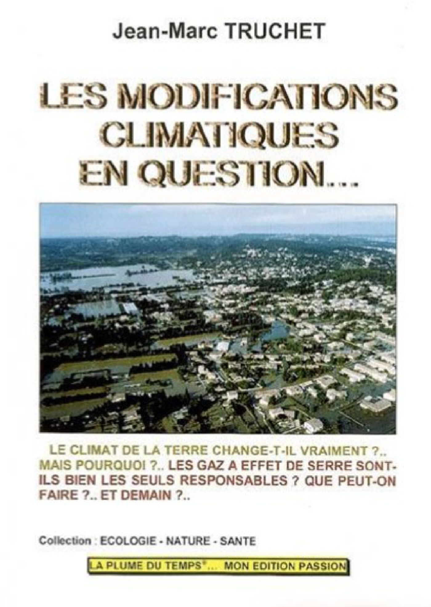
Il ne se passe guère de temps sans que les médias rapportent ici ou là, telle ou telle catastrophe provoquée tantôt par des inondations, tantôt par des vents d’une extrême violence. Quant aux glaces des pôles, celles-ci semblent fondre plus vite que prévu... Le climat est-il vraiment en train de changer et quelles en seraient les raisons... L’on parle beaucoup de la pollution et des gaz à effet de serre comme de dioxyde de carbone (CO2) ou le méthane (CH4) mais sont-ils bien les seuls responsables ? Urbanisation mal maîtrisée, erreurs humaines, voies de communications, transports, déforestation, etc. Quels rôles peuvent-ils avoir sur le climat régional et sur celui de la planète ?
Sommes-nous entrés dans un siècle de cataclysmes ?
« Je n'ai jamais su comment ranger les souvenirs dans les étagères de la mémoire. Il n'existe pas de réservoirs du vécu ni de hangars des réminiscencesqu'on vide un jour pour embellir les devantures du passé. Nous n'avons rien de personnel, chacun de nous est une bribe dérisoire de l'universel sans aucune originalité. On croit raconter des choses inédites et singulières alors qu'on ne formule que des lieux communs. On se croit unique alors qu'on est tout simplement banal. »
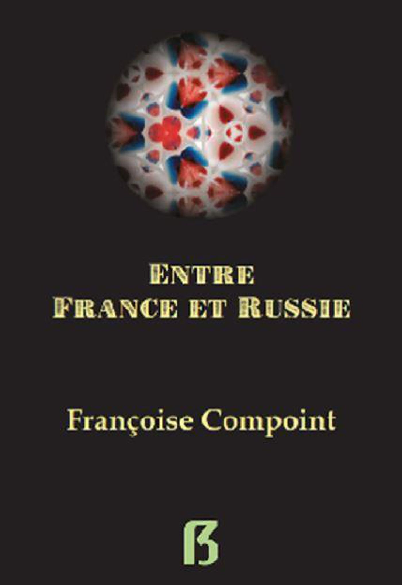
La rédaction de « MÉTHODE » recommande : ENTRE FRANCE ET RUSSIE DE NOTRE RÉDACTRICE ET AMIE FRANÇOISE COMPOINT
Des enfants partageant deux nationalités, deux langues, deux cultures, il y en a. Mais... lorsque la petite fille pose son regard sur les gens, les choses, les noms ; grâce à des guides s'est trempée d'époques, de senteurs et d'images ; lorsque les rêves viennent à elle et que les yeux demeurent ouverts, alors le grand jeu existentiel peut commencer ; celui de tous les philosophes : qui suis-je, où aller, pourquoi ?
Françoise Compoint induit ses réponses, limpides, sourdant de la profondeur commune du souvenir et de l'actualité. Cette communion, elle a été la chercher, et ce texte est une ponctuation d'archétypes que le lecteur ne manquera pas de saisir à son profit : Galitch ; les inconnues familières ; le médecin à la peau d'hostie... Entre le cru et le suave, le clair et le sombre, entre le devenir et le passant : la Russie et la France.
La rédaction de « MÉTHODE » recommande : LES RAVAGES CIVILISATIONNELS RÉGRESSIFS DE L'ISLAM D’IVAN BARTOWSKI,
étude historique, ethnologique, sociologique, politique et géopolitique de la communauté musulmane et de son influence sur les sociétés humaines depuis sa création jusqu'à nos jours.
Preply est un service éducatif en ligne qui jumelle des étudiants avec des tuteurs privés, localement en personne ou à distance via Skype.
Preply offre plus de 40 différents sujets d’apprentissage (mathématiques, histoire, comptabilité, langue des signes…etc.) dont 27 langues étrangères (chinois, russe, etc.).
Ne perdez pas de temps sur la route, prenez vos leçons de n’importe quel endroit avec une connexion internet. En voyage d’affaire ou depuis votre salon, vous aurez accès à nos professeurs de partout dans le monde.
La vague néolibérale mondiale a-t-elle échoué à atteindre la Russie ? Le calme de façade de la politique intérieure du pays couvre des turbulences que nous ne soupçonnons pas. Derrière la personnalité de V. Poutine, ce sont des clans néolibéraux et conservateurs qui s'affrontent à travers les organes de pouvoir, font passer des réformes, lancent des contre-réformes. Cette gouvernance russe s'est ouverte aux modalités néolibérales et revendique sa place dans la mondialisation.
Karine Bechet-Golvko est docteur en droit, professeur invité à l'Université d'Etat de Moscou, présidente de l'association franco-russe de juristes Comitas Gentium France-Russie, animatrice du site Russie Politics, auteur de nombreux articles sur la situation politico-juridique en Russie aujourd'hui
Éditions L’harmattan
Broché - format : 13,5 x 21,5 cm
ISBN : 978-2-343-14080-3 • janvier 2018 • 240 pages
EAN13 : 9782343140803
EAN PDF : 9782140064616.
« Méthode » vous recommende vivement l'ouvrage de notre rédacteur Guillaume BERNARD « La guerre à droite aura bien lieu. Le mouvement dextrogyre ».
Cet ouvrage propose d'analyser l'état des forces politiques françaises, à la fois sous l'angle organisationnel et idéologique : au-delà de la simple description (tripolarisation de la vie politique) et de l'évocation des vraisemblables évolutions (« grande coalition » contre le FN), il s'agit de comprendre le contexte (l'insécurité matérielle et physique, économique et sociale, culturelle et morale) et les rapports de force (les dynamiques qui poussent à une recomposition du spectre électoral et du système partisan).
« Méthode » vous recommande vivement
les CD de notre rédactrice Daniela ASARO ROMANOFF
ROMANOV’S MEMORY.
« Méthode » vous recommende vivement l'ouvrage de notre rédacteur Bertrand BRISSET « La Guerre de Crimée 1854-1856. Une première guerre moderne et mondiale ».
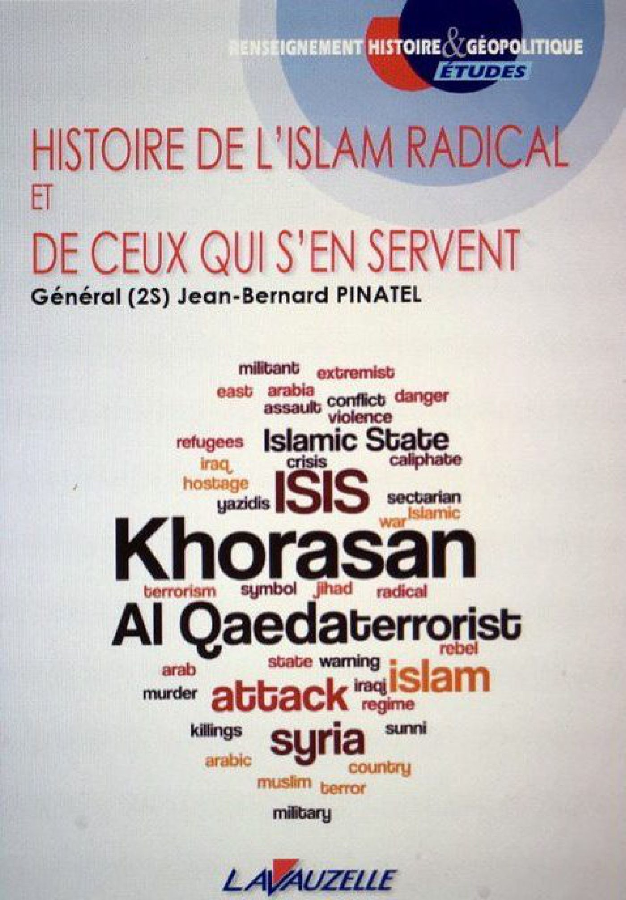
« Méthode » vous recommende vivement l'ouvrage de notre rédacteur le Général (2S) Jean-Bernard PINATEL « Histoire de l'islam radical et de ceux qui s'en servent ».
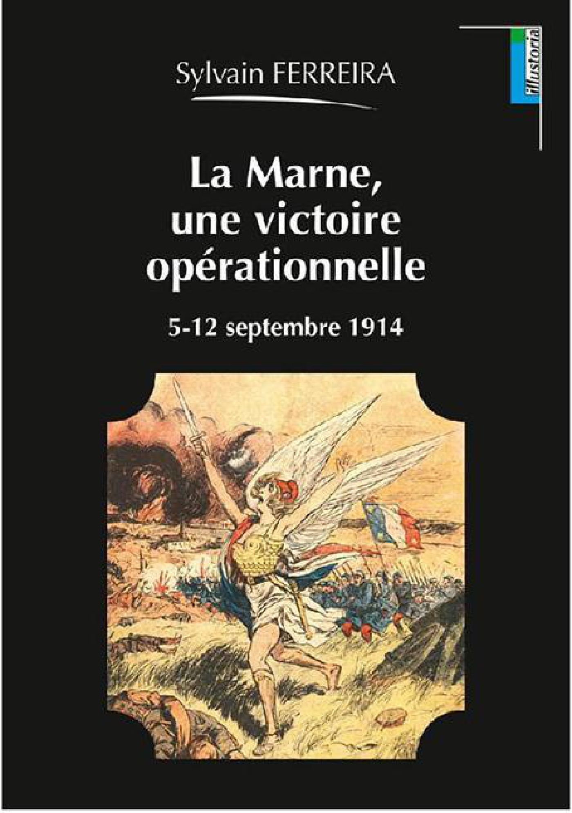
« Méthode » vous recommande vivement l'ouvrage de notre rédacteur Sylvain FERREIRA « La Marne, une victoire opérationnelle ».
« Méthode » recommande le dernier ouvrage de notre ami rédacteur Guillaume Bernard « La guerre à droite aura bien lieu».
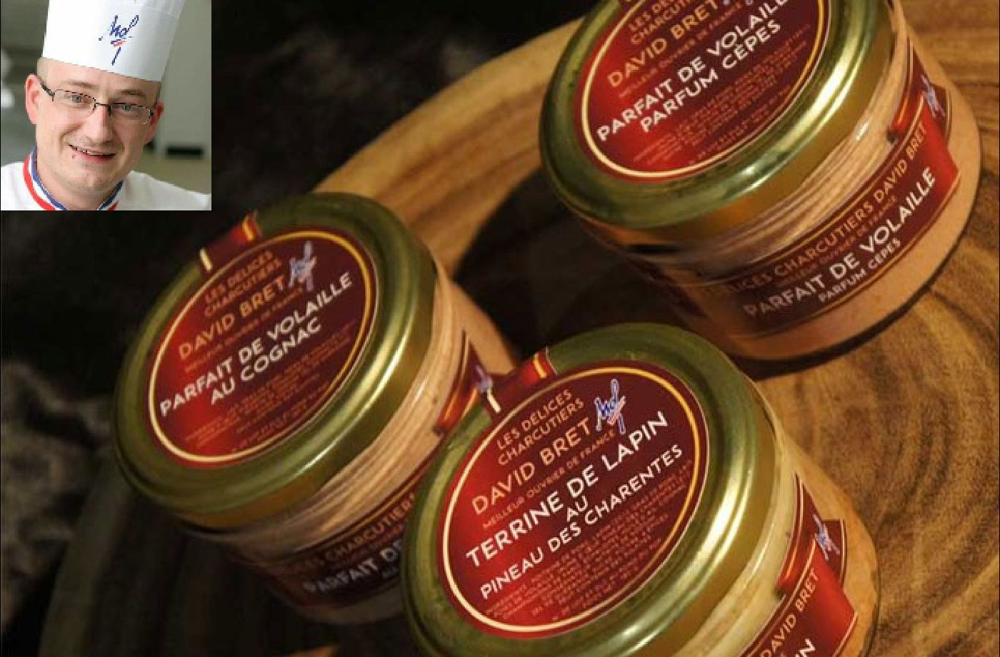
« Méthode » recommande la boutique de délices charcutiers de notre ami et rédacteur, le chef David Bret.
Saisissez votre adresse mail dans l'espace ci-dessous : c'est gratuit et sans engagement
REVUE MÉTHODE
http://revuemethode.org
Partager cette page